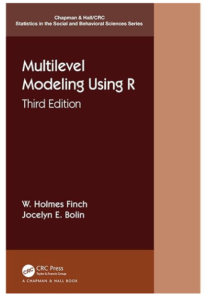
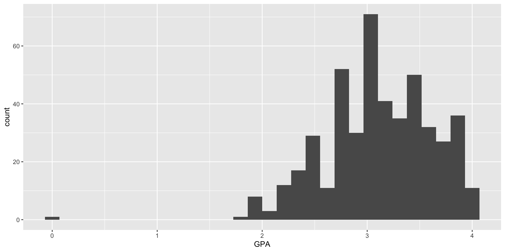
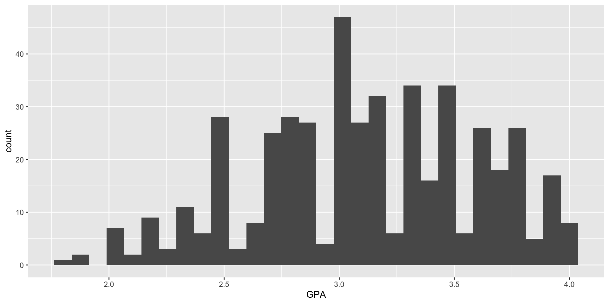
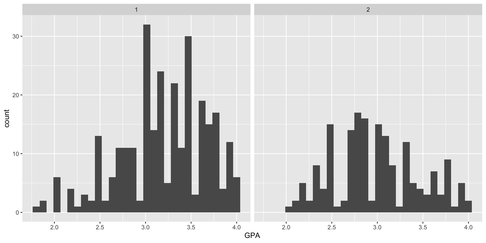
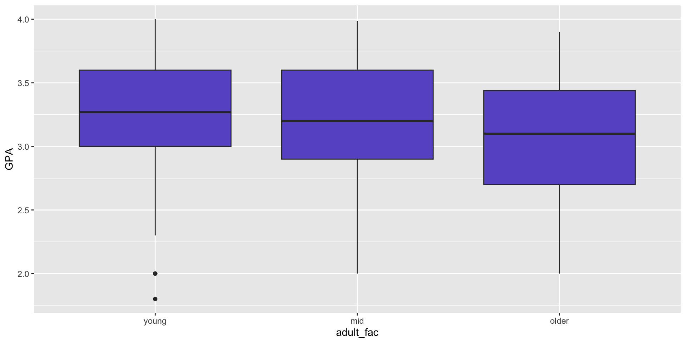

Cassady data from Multilevel Modeling Using R by Finch and Bolin. You can access the Cassady data from www.mlminr.com.

# A tibble: 4 × 30
Gender Male Minority Age GPA Verbal Math TotSAT SSH.total BStotal
<dbl> <dbl> <dbl> <dbl> <dbl> <dbl> <dbl> <dbl> <dbl> <dbl>
1 2 1 1 21 2.5 NA NA NA 20 14
2 1 0 1 20 2.2 NA NA NA 20 20
3 2 1 1 21 2.8 NA NA NA 18 23
4 2 1 1 22 2.25 NA NA NA 18 30
# ℹ 20 more variables: CTA.tot <dbl>, PTTtotal <dbl>, PTT.factor1 <dbl>,
# PTT.factor2 <dbl>, PTT.factor3 <dbl>, Perf.CM <dbl>, Perf.D <dbl>,
# Perf.PE <dbl>, Perf.PC <dbl>, Perf.PS <dbl>, Perf.O <dbl>,
# harvey.negproj <dbl>, harvey.achexp <dbl>, harvey.parinf <dbl>,
# harvey.org <dbl>, stoeberORG <dbl>, stoeberCMD <dbl>, stoeberPEC <dbl>,
# stoeberPS <dbl>, Harvey4f <dbl> Gender Male Minority Age
Min. :1.000 Min. :0.0000 Min. :0.0000 Min. :18.00
1st Qu.:1.000 1st Qu.:0.0000 1st Qu.:1.0000 1st Qu.:20.00
Median :1.000 Median :0.0000 Median :1.0000 Median :20.00
Mean :1.374 Mean :0.3745 Mean :0.9321 Mean :20.97
3rd Qu.:2.000 3rd Qu.:1.0000 3rd Qu.:1.0000 3rd Qu.:21.00
Max. :2.000 Max. :1.0000 Max. :1.0000 Max. :50.00
NA's :2
GPA Verbal Math TotSAT
Min. : 0.000 Min. :100.0 Min. :210.0 Min. : 600
1st Qu.: 2.800 1st Qu.:460.0 1st Qu.:487.5 1st Qu.: 970
Median : 3.100 Median :520.0 Median :540.0 Median :1055
Mean : 3.753 Mean :527.4 Mean :537.4 Mean :1069
3rd Qu.: 3.500 3rd Qu.:590.0 3rd Qu.:600.0 3rd Qu.:1160
Max. :302.000 Max. :800.0 Max. :780.0 Max. :1520
NA's :19 NA's :109 NA's :110 NA's :100
SSH.total BStotal CTA.tot PTTtotal
Min. : 8.00 Min. :10.00 Min. :17.00 Min. :27.00
1st Qu.:18.00 1st Qu.:11.00 1st Qu.:27.00 1st Qu.:41.00
Median :23.00 Median :13.00 Median :34.00 Median :48.00
Mean :21.95 Mean :15.88 Mean :35.14 Mean :48.65
3rd Qu.:25.00 3rd Qu.:20.00 3rd Qu.:43.00 3rd Qu.:56.00
Max. :32.00 Max. :40.00 Max. :68.00 Max. :81.00
NA's :13 NA's :13 NA's :27 NA's :21
PTT.factor1 PTT.factor2 PTT.factor3 Perf.CM
Min. :13.00 Min. : 5.00 Min. : 4.000 Min. : 9.00
1st Qu.:23.00 1st Qu.:10.00 1st Qu.: 5.000 1st Qu.:19.00
Median :27.00 Median :13.00 Median : 7.000 Median :23.00
Mean :27.39 Mean :13.34 Mean : 7.998 Mean :23.69
3rd Qu.:32.00 3rd Qu.:16.00 3rd Qu.:10.000 3rd Qu.:28.00
Max. :41.00 Max. :25.00 Max. :20.000 Max. :45.00
NA's :16 NA's :4 NA's :4 NA's :14
Perf.D Perf.PE Perf.PC Perf.PS
Min. : 4.00 Min. : 5.00 Min. : 4.000 Min. : 7.00
1st Qu.: 8.00 1st Qu.:13.00 1st Qu.: 6.000 1st Qu.:22.00
Median :11.00 Median :15.00 Median : 8.000 Median :25.00
Mean :10.92 Mean :15.29 Mean : 8.835 Mean :25.07
3rd Qu.:13.00 3rd Qu.:18.00 3rd Qu.:11.000 3rd Qu.:28.00
Max. :20.00 Max. :25.00 Max. :20.000 Max. :35.00
NA's :7 NA's :7 NA's :8 NA's :12
Perf.O harvey.negproj harvey.achexp harvey.parinf harvey.org
Min. : 6.00 Min. :12.00 Min. : 8.00 Min. : 9.0 Min. : 6.00
1st Qu.:22.00 1st Qu.:26.00 1st Qu.:25.00 1st Qu.:19.0 1st Qu.:22.00
Median :24.00 Median :31.00 Median :29.00 Median :23.0 Median :24.00
Mean :23.95 Mean :31.28 Mean :28.41 Mean :24.1 Mean :23.95
3rd Qu.:28.00 3rd Qu.:37.00 3rd Qu.:32.00 3rd Qu.:28.0 3rd Qu.:28.00
Max. :30.00 Max. :60.00 Max. :40.00 Max. :45.0 Max. :30.00
NA's :6 NA's :16 NA's :12 NA's :11 NA's :6
stoeberORG stoeberCMD stoeberPEC stoeberPS Harvey4f
Min. : 6.00 Min. :12.00 Min. : 9.0 Min. : 7.00 Min. :1.000
1st Qu.:22.00 1st Qu.:26.00 1st Qu.:19.0 1st Qu.:21.00 1st Qu.:2.000
Median :24.00 Median :31.00 Median :23.0 Median :25.00 Median :2.000
Mean :23.95 Mean :31.28 Mean :24.1 Mean :24.58 Mean :2.474
3rd Qu.:28.00 3rd Qu.:37.00 3rd Qu.:28.0 3rd Qu.:28.00 3rd Qu.:3.000
Max. :30.00 Max. :60.00 Max. :45.0 Max. :35.00 Max. :4.000
NA's :6 NA's :16 NA's :11 NA's :12 NA's :30 # A tibble: 1 × 30
Gender Male Minority Age GPA Verbal Math TotSAT SSH.total BStotal
<dbl> <dbl> <dbl> <dbl> <dbl> <dbl> <dbl> <dbl> <dbl> <dbl>
1 2 1 1 19 302 520 540 1060 NA 11
# ℹ 20 more variables: CTA.tot <dbl>, PTTtotal <dbl>, PTT.factor1 <dbl>,
# PTT.factor2 <dbl>, PTT.factor3 <dbl>, Perf.CM <dbl>, Perf.D <dbl>,
# Perf.PE <dbl>, Perf.PC <dbl>, Perf.PS <dbl>, Perf.O <dbl>,
# harvey.negproj <dbl>, harvey.achexp <dbl>, harvey.parinf <dbl>,
# harvey.org <dbl>, stoeberORG <dbl>, stoeberCMD <dbl>, stoeberPEC <dbl>,
# stoeberPS <dbl>, Harvey4f <dbl>Let’s assume we checked and the GPA was 3.02, not 302.
# A tibble: 0 × 30
# ℹ 30 variables: Gender <dbl>, Male <dbl>, Minority <dbl>, Age <dbl>,
# GPA <dbl>, Verbal <dbl>, Math <dbl>, TotSAT <dbl>, SSH.total <dbl>,
# BStotal <dbl>, CTA.tot <dbl>, PTTtotal <dbl>, PTT.factor1 <dbl>,
# PTT.factor2 <dbl>, PTT.factor3 <dbl>, Perf.CM <dbl>, Perf.D <dbl>,
# Perf.PE <dbl>, Perf.PC <dbl>, Perf.PS <dbl>, Perf.O <dbl>,
# harvey.negproj <dbl>, harvey.achexp <dbl>, harvey.parinf <dbl>,
# harvey.org <dbl>, stoeberORG <dbl>, stoeberCMD <dbl>, stoeberPEC <dbl>, …Our outcome variable is GPA. This is what we want to model. Let’s take a quick look at the distribution.

Looking at the histogram, there’s an outlier with GPA = 0. Can you filter the data to remove this value?
Now let’s look at the updated histogram:

Call:
lm(formula = GPA ~ CTA.tot + BStotal, data = students_clean)
Residuals:
Min 1Q Median 3Q Max
-1.48878 -0.29343 0.00855 0.36218 0.91578
Coefficients:
Estimate Std. Error t value Pr(>|t|)
(Intercept) 3.597605 0.075817 47.451 < 2e-16 ***
CTA.tot -0.019775 0.002928 -6.754 4.73e-11 ***
BStotal 0.014601 0.004852 3.009 0.00278 **
---
Signif. codes: 0 '***' 0.001 '**' 0.01 '*' 0.05 '.' 0.1 ' ' 1
Residual standard error: 0.4635 on 425 degrees of freedom
(38 observations deleted due to missingness)
Multiple R-squared: 0.1089, Adjusted R-squared: 0.1047
F-statistic: 25.97 on 2 and 425 DF, p-value: 2.285e-11You can turn off the scientific notation
Now run the model again
Call:
lm(formula = GPA ~ CTA.tot + BStotal, data = students_clean)
Residuals:
Min 1Q Median 3Q Max
-1.48878 -0.29343 0.00855 0.36218 0.91578
Coefficients:
Estimate Std. Error t value Pr(>|t|)
(Intercept) 3.597605 0.075817 47.451 < 0.0000000000000002 ***
CTA.tot -0.019775 0.002928 -6.754 0.0000000000473 ***
BStotal 0.014601 0.004852 3.009 0.00278 **
---
Signif. codes: 0 '***' 0.001 '**' 0.01 '*' 0.05 '.' 0.1 ' ' 1
Residual standard error: 0.4635 on 425 degrees of freedom
(38 observations deleted due to missingness)
Multiple R-squared: 0.1089, Adjusted R-squared: 0.1047
F-statistic: 25.97 on 2 and 425 DF, p-value: 0.00000000002285Two different ways to set up the syntax:
variable1 + variable2 + variable1:variable2 explicitly requests main effects and the interaction
variable1 * variable2 interaction term with implied main effects
model_gpa_anxiety2 <- lm(GPA ~ CTA.tot + BStotal + CTA.tot:BStotal,
data = students_clean)
summary(model_gpa_anxiety2)
Call:
lm(formula = GPA ~ CTA.tot + BStotal + CTA.tot:BStotal, data = students_clean)
Residuals:
Min 1Q Median 3Q Max
-1.51894 -0.30345 0.00985 0.35833 0.94352
Coefficients:
Estimate Std. Error t value Pr(>|t|)
(Intercept) 3.8651047 0.2204453 17.533 < 0.0000000000000002 ***
CTA.tot -0.0262269 0.0057867 -4.532 0.0000076 ***
BStotal -0.0038434 0.0150755 -0.255 0.799
CTA.tot:BStotal 0.0004152 0.0003213 1.292 0.197
---
Signif. codes: 0 '***' 0.001 '**' 0.01 '*' 0.05 '.' 0.1 ' ' 1
Residual standard error: 0.4631 on 424 degrees of freedom
(38 observations deleted due to missingness)
Multiple R-squared: 0.1124, Adjusted R-squared: 0.1061
F-statistic: 17.9 on 3 and 424 DF, p-value: 0.00000000005912Is the model with the interaction term a better fit?
When the interaction is significant, you need to understand the coefficients in the context of that interaction.
If categorical, create regression lines by group; easy to do in ggplot
If continuous, you can calculate the predicted values of the outcome at particular values in the predictor
For more details see the interactions and emmeans packages. We’ll also return to this in Week 4.

We used two continuous predictors last week, but how does R handle categorical predictors? Let’s look at our data again.
tibble [466 × 30] (S3: tbl_df/tbl/data.frame)
$ Gender : num [1:466] 2 1 2 2 2 2 2 2 2 2 ...
$ Male : num [1:466] 1 0 1 1 1 1 1 1 1 1 ...
$ Minority : num [1:466] 1 1 1 1 1 1 1 1 1 0 ...
$ Age : num [1:466] 21 20 21 22 21 21 21 21 20 20 ...
$ GPA : num [1:466] 2.5 2.2 2.8 2.25 3.1 ...
$ Verbal : num [1:466] NA NA NA NA NA 600 525 NA NA 400 ...
$ Math : num [1:466] NA NA NA NA NA 600 600 NA NA 450 ...
$ TotSAT : num [1:466] NA NA NA NA NA ...
$ SSH.total : num [1:466] 20 20 18 18 19 21 32 20 31 21 ...
$ BStotal : num [1:466] 14 20 23 30 17 NA 34 19 10 19 ...
$ CTA.tot : num [1:466] 42 NA 40 49 36 45 61 36 17 43 ...
$ PTTtotal : num [1:466] NA 44 47 47 46 57 59 40 35 48 ...
$ PTT.factor1 : num [1:466] 25 27 25 26 22 34 34 20 23 30 ...
$ PTT.factor2 : num [1:466] NA 13 16 13 17 17 5 13 7 13 ...
$ PTT.factor3 : num [1:466] 11 4 6 8 7 6 20 7 5 5 ...
$ Perf.CM : num [1:466] 25 31 27 22 33 28 42 20 9 28 ...
$ Perf.D : num [1:466] 10 12 14 12 16 10 19 12 4 13 ...
$ Perf.PE : num [1:466] 17 18 18 13 21 19 22 18 7 13 ...
$ Perf.PC : num [1:466] 10 13 10 10 16 9 15 7 4 10 ...
$ Perf.PS : num [1:466] 26 28 25 21 26 25 31 21 22 25 ...
$ Perf.O : num [1:466] 24 30 24 18 25 22 30 24 23 29 ...
$ harvey.negproj: num [1:466] 32 39 37 32 46 36 56 30 12 37 ...
$ harvey.achexp : num [1:466] 29 32 29 23 29 27 36 23 23 29 ...
$ harvey.parinf : num [1:466] 27 31 28 23 37 28 37 25 11 23 ...
$ harvey.org : num [1:466] 24 30 24 18 25 22 30 24 23 29 ...
$ stoeberORG : num [1:466] 24 30 24 18 25 22 30 24 23 29 ...
$ stoeberCMD : num [1:466] 32 39 37 32 46 36 56 30 12 37 ...
$ stoeberPEC : num [1:466] 27 31 28 23 37 28 37 25 11 23 ...
$ stoeberPS : num [1:466] 26 29 25 20 25 24 32 19 18 24 ...
$ Harvey4f : num [1:466] 1 4 1 1 4 1 4 1 2 3 ...What does the gender variable currently look like?
Not technically a categorical variable, but does that matter in the binary case?
Let’s just proceed and see what happens when we add this as a third variable to the model.
In order to interpret, you must understand the raw data!
Call:
lm(formula = GPA ~ CTA.tot + BStotal + Gender, data = students_clean)
Residuals:
Min 1Q Median 3Q Max
-1.58064 -0.27798 0.00606 0.32673 0.96193
Coefficients:
Estimate Std. Error t value Pr(>|t|)
(Intercept) 3.936351 0.099728 39.471 < 0.0000000000000002 ***
CTA.tot -0.021325 0.002864 -7.447 0.000000000000539 ***
BStotal 0.016408 0.004732 3.467 0.00058 ***
Gender -0.229325 0.045464 -5.044 0.000000676865033 ***
---
Signif. codes: 0 '***' 0.001 '**' 0.01 '*' 0.05 '.' 0.1 ' ' 1
Residual standard error: 0.4507 on 424 degrees of freedom
(38 observations deleted due to missingness)
Multiple R-squared: 0.1593, Adjusted R-squared: 0.1534
F-statistic: 26.79 on 3 and 424 DF, p-value: 0.000000000000000694Let’s turn the Gender numeric variable into a factor so we can add labels and order
Let’s look at our new factor
model_gpa_anxiety_gender2 <- lm(GPA ~ CTA.tot + BStotal + gender_factor,
data = students_clean)
summary(model_gpa_anxiety_gender2)
Call:
lm(formula = GPA ~ CTA.tot + BStotal + gender_factor, data = students_clean)
Residuals:
Min 1Q Median 3Q Max
-1.58064 -0.27798 0.00606 0.32673 0.96193
Coefficients:
Estimate Std. Error t value Pr(>|t|)
(Intercept) 3.707026 0.076851 48.236 < 0.0000000000000002 ***
CTA.tot -0.021325 0.002864 -7.447 0.000000000000539 ***
BStotal 0.016408 0.004732 3.467 0.00058 ***
gender_factorMale -0.229325 0.045464 -5.044 0.000000676865033 ***
---
Signif. codes: 0 '***' 0.001 '**' 0.01 '*' 0.05 '.' 0.1 ' ' 1
Residual standard error: 0.4507 on 424 degrees of freedom
(38 observations deleted due to missingness)
Multiple R-squared: 0.1593, Adjusted R-squared: 0.1534
F-statistic: 26.79 on 3 and 424 DF, p-value: 0.000000000000000694Checking the average GPA by gender
Call:
lm(formula = GPA ~ adult_group, data = students_clean)
Residuals:
Min 1Q Median 3Q Max
-1.38315 -0.33056 -0.01315 0.36944 0.97311
Coefficients:
Estimate Std. Error t value Pr(>|t|)
(Intercept) 3.13056 0.02868 109.146 <0.0000000000000002 ***
adult_groupolder -0.10367 0.05911 -1.754 0.0801 .
adult_groupyoung 0.05259 0.05963 0.882 0.3782
---
Signif. codes: 0 '***' 0.001 '**' 0.01 '*' 0.05 '.' 0.1 ' ' 1
Residual standard error: 0.4876 on 462 degrees of freedom
(1 observation deleted due to missingness)
Multiple R-squared: 0.01037, Adjusted R-squared: 0.006083
F-statistic: 2.42 on 2 and 462 DF, p-value: 0.09006 (Intercept) adult_groupolder adult_groupyoung
3.13055709 -0.10366945 0.05259233 We need a factor to switch the reference category…
Call:
lm(formula = GPA ~ adult_fac, data = students_clean)
Residuals:
Min 1Q Median 3Q Max
-1.38315 -0.33056 -0.01315 0.36944 0.97311
Coefficients:
Estimate Std. Error t value Pr(>|t|)
(Intercept) 3.18315 0.05228 60.891 <0.0000000000000002 ***
adult_facmid -0.05259 0.05963 -0.882 0.3782
adult_facolder -0.15626 0.07351 -2.126 0.0341 *
---
Signif. codes: 0 '***' 0.001 '**' 0.01 '*' 0.05 '.' 0.1 ' ' 1
Residual standard error: 0.4876 on 462 degrees of freedom
(1 observation deleted due to missingness)
Multiple R-squared: 0.01037, Adjusted R-squared: 0.006083
F-statistic: 2.42 on 2 and 462 DF, p-value: 0.09006
You have access to the gss_cat data that lives inside the forcats package (part of tidyverse).
year marital age race
Min. :2000 No answer : 17 Min. :18.00 Other : 1959
1st Qu.:2002 Never married: 5416 1st Qu.:33.00 Black : 3129
Median :2006 Separated : 743 Median :46.00 White :16395
Mean :2007 Divorced : 3383 Mean :47.18 Not applicable: 0
3rd Qu.:2010 Widowed : 1807 3rd Qu.:59.00
Max. :2014 Married :10117 Max. :89.00
NA's :76
rincome partyid relig
$25000 or more:7363 Independent :4119 Protestant:10846
Not applicable:7043 Not str democrat :3690 Catholic : 5124
$20000 - 24999:1283 Strong democrat :3490 None : 3523
$10000 - 14999:1168 Not str republican:3032 Christian : 689
$15000 - 19999:1048 Ind,near dem :2499 Jewish : 388
Refused : 975 Strong republican :2314 Other : 224
(Other) :2603 (Other) :2339 (Other) : 689
denom tvhours
Not applicable :10072 Min. : 0.000
Other : 2534 1st Qu.: 1.000
No denomination : 1683 Median : 2.000
Southern baptist: 1536 Mean : 2.981
Baptist-dk which: 1457 3rd Qu.: 4.000
United methodist: 1067 Max. :24.000
(Other) : 3134 NA's :10146 Create a linear model predicting tvhours. Use age and an additional factor (your choice) as predictors. Be sure to check the levels of your factor so you can interpret the coefficients.
We’ll work through models with binary outcomes – logistic regression!
S.Kelly | Regression Modeling in R | Fall 2026